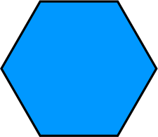
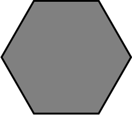
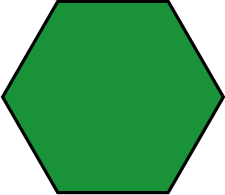
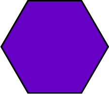
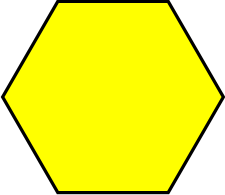
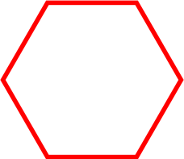
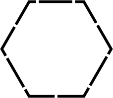

On the Subject of Cryptid
A creature whose existence is disputed or unsubstantiated.
To disarm the module, submit the space that contains the creature's habitat. The location of the habitat is determined by the rules generated by the module.
The 22 character string at the top of the module is the map seed. Enter the 22 character string [LINK TO BE ADDED] to generate the layout of the terrain.
Topography
| Water | Mountain | Forest | Swamp | Desert |
|---|---|---|---|---|
|  |  |  |  |  |
| Cougar Territory | Bear Territory | Standing Stone | Abandoned Shack | |
|  |  |  |  |
At the bottom of the module is a coordinate selector. You can change the current coordinate via the arrows above/below each letter/number. The columns of the map is labeled A - L, left to right and each space in that column is labeled 1 - 9, top to bottom.
The squares below the map seed represent the rules that determine the location of the creature's habitat. Changing the current coordinate can cause the squares to switch between colored and black. While the squares are colored, you can query the current coordinate to see which rules are satisfied. O means the rule is satisfied and X means the opposite. While the squares are black, you can submit that coordinate if you think the habitat is at that coordinate. You can't query while the squares are black and you can't submit the coordinate while the squares are colored.